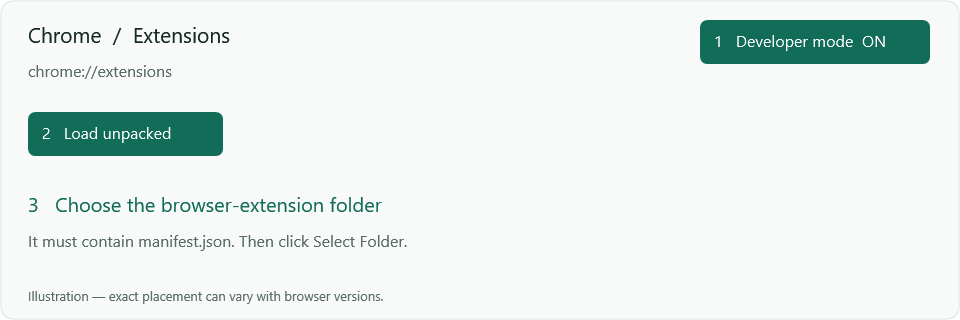
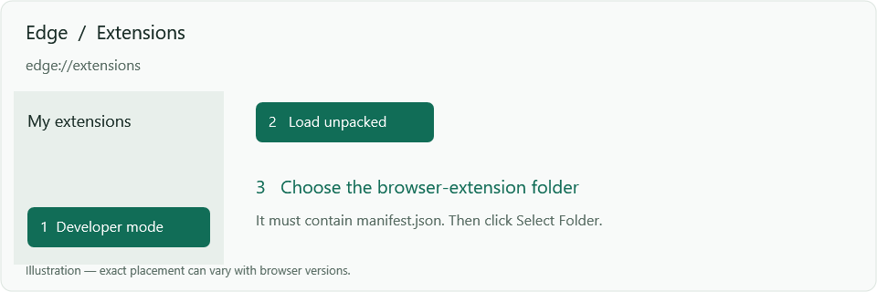
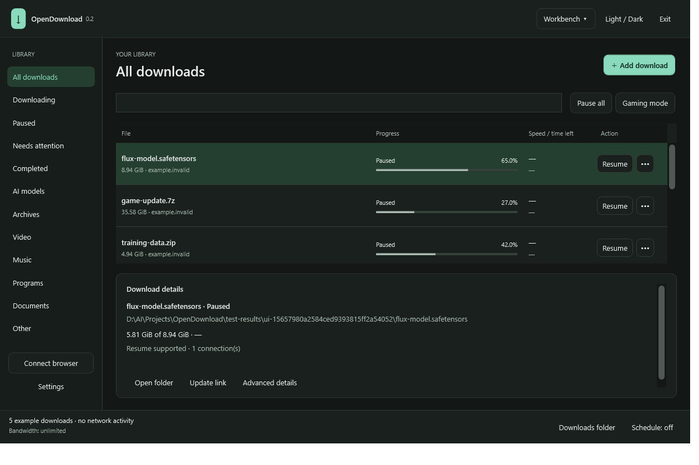
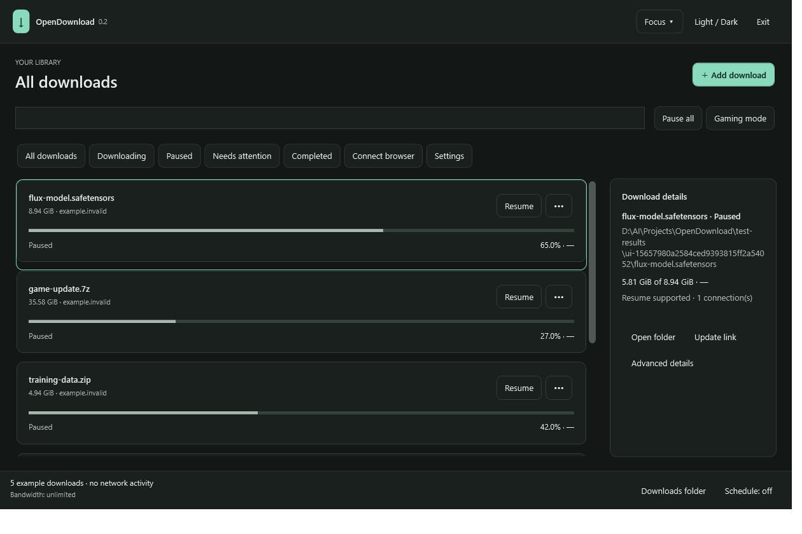

OpenDownload includes its own Chrome / Edge extension. The installer prepares the native helper automatically. Your browser still needs you to approve loading the extension once.
This version is distributed as an unpacked extension, not a Chrome Web Store or Edge Add-ons listing. The pictures below are labeled illustrations; OpenDownload screenshots use example files.
In OpenDownload choose Connect browser, select Chrome or Edge, then click Prepare helper and open extensions. That button launches the correct browser page and registers the helper for your Windows account.
Alternatively type chrome://extensions or edge://extensions in your browser’s address bar. Ordinary web pages are not allowed to open every internal browser page, so the button in the desktop app is the most reliable way.
Chrome: Developer mode is usually at the top right. Turn it on and click Load unpacked.

Edge: Developer mode is normally in the left sidebar. Turn it on and click Load unpacked.

manifest.json, not the app’s parent folder and not a ZIP file.The path is <your installation folder>\browser-extension. Keep this folder in its permanent installation location so the extension can load again after a browser restart.
In the desktop guide click Open extension and check connection. It opens the installed extension’s page and runs a check. Alternatively click the browser’s puzzle-piece Extensions button, open OpenDownload Integration, and click Check connection.
You should see Connected to OpenDownload in the extension. The desktop app reports the time of the last successful browser check. Registration alone does not prove the browser is connected.
You can also paste a link into the extension popup. Automatic capture is off by default; enable it only when you want OpenDownload to take over browser downloads.
The first launch offers Workbench and Focus. Your selection is remembered. Use the layout button at the top of the app to switch later.


Check that you opened the extensions management page, not the extension store. On managed work/school browsers, policy may hide these controls. Ask your browser administrator rather than changing security policies.
Select the browser-extension folder shown by OpenDownload. If you downloaded the portable ZIP, extract it first. If the folder is missing, reinstall the app or extract a complete release package.
Open OpenDownload → Connect browser → Prepare helper. Ensure OpenDownload.NativeHost.exe is still alongside the desktop app. Restart the browser and check again. For old/custom extensions, expand Advanced, copy the extension’s 32-letter ID and register it there.
Load the extension first. Then open it using the browser’s Extensions puzzle icon and click Check connection manually. If the extension’s card has an error, check its details and verify the installation folder still exists.
The extension does not automatically extract cookies. Enter a required token or cookie in Add download → Authentication when appropriate, or use your browser for that download. Direct media-file URLs are supported; arbitrary site video detection and protected streams are not.
OpenDownload has an independent extension. If you enable automatic interception, use only one download manager’s automatic capture at a time to avoid competing handlers. You can keep both apps installed and use OpenDownload’s explicit right-click action while evaluating it.